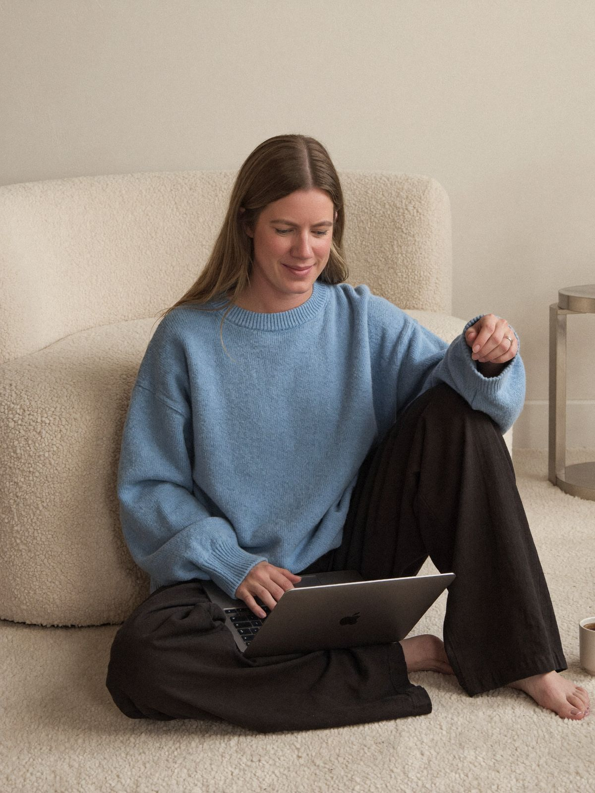

Most businesses I work with are better than they look online.
I spent more than twenty years in hospitality and owned three cafés. I know what a quiet Wednesday looks like in the bank account on Thursday, and how much of a week can hang on whether someone found your menu on their phone.
I see the same thing over and over. A business has built a good name, the referrals are coming in and the regulars are loyal. Then a new customer Googles them and finds an old website, photos taken on a phone between services and a list of services that stopped being accurate a couple of years ago. The business has moved on and the marketing hasn’t. That gap costs enquiries, and most owners never find out how many.
The Service Edit started with email. My first project was setting up Meat Merchant’s email marketing in Klaviyo. Websites came next, then photos, because I kept building good sites and filling them with photos that undersold the business. These days I often do all three for the same client, because they work better when one person is looking after them.
It’s just me. There’s no account manager and no junior doing the work. You’ll deal with me from the first email through to launch, and I’m the one sending your campaigns after that.